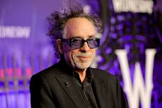

Diretor da série de wandinha é Tim Burton.

Elenco dos Personagens
wandinha em interpretada por
(Jenna Ortega) Nome completo: Jenna Marie Ortega. Nacida 27 de setembro de 2002 (idade 20 anos), Coachella Valley, Palm Desert, Califórnia, EUA.
Wandinha ela pode usar suas habilidades de visões paranormais para
ver o passado da sua época.
Xavier Thorpe em interpretado por
(Percy Hyenes White) Nome completo: Percy Hynes WhiteNascido: 8 de outubro de 2001 (idade 21 anos), São João da Terra Nova, Canadá. Ele transformar suas obras de arte em entidades vivas.
Enid Sinclair em interpretada por
(Emma Myers) Nascida: 2 de abril de 2002 (idade 21 anos), Orlando, Flórida, EUA. Enid vem de uma família de lobisomens, mas ainda não desenvolveu seus “poderes”, o que a deixa em um clima de tensão com a família.
Tyler Galpin em interpretado por
(Hunetr Doohan) Nascido: 18 de janeiro de 1994 (idade 29 anos), Fort Smith, Arkansas, EUA. Ele trabalha na cafeteria da cidade (ele é um HYDE um monstro).
Diretora Larissa Weems em interpretada por
(Gwendoline Christie) Nome completo: Gwendoline Tracey Philippa Christie Nascida: 28 de outubro de 1978 (idade 44 anos), Worthing, Reino Unido.Ela representa a maior autoridade do lugar,mesmo com uma personalidade
complicada,adolecente possui um forte vínculo como o lugar,sendo capaz de usar sues poderes de Metamorfa para afastar qualquer possível ameaça.
Marilyn Thornhill em interpretada por
(Christina sRicci) Nascida: 12 de fevereiro de 1980 (idade 43 anos), Santa Mônica, Califórnia, EUA. Professora Marilyn Thornhill odeia os excluídos de Nuca Mais.